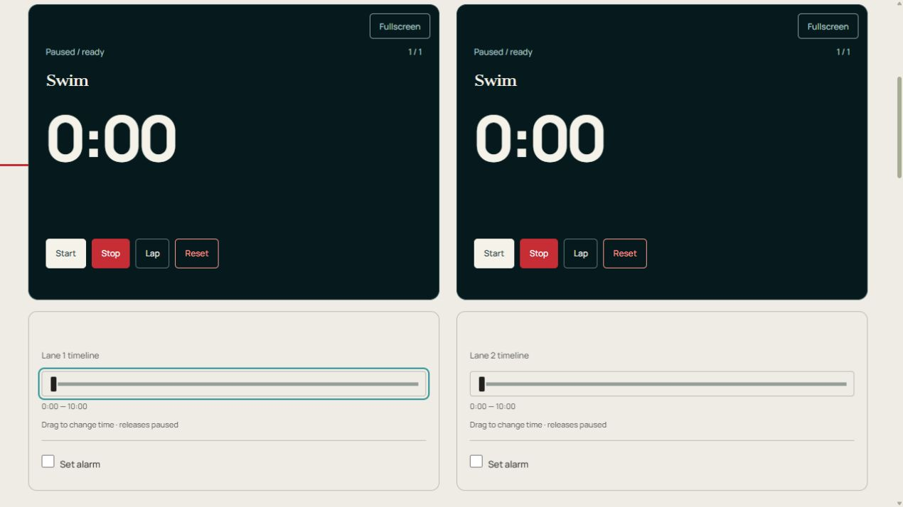

Schwimmtimer
Zeichnen Sie verstrichene Zeiten und Rundenabschnitte auf sechs Schwimmbahnen auf.
Lassen Sie diese Seite geöffnet. Die Wiederherstellung der Uhren wurde nach einem Neuladen angehalten. Bühnenhinweise erfordern aktivierten Ton.
Anleitung und Tipps
So funktioniert Schwimmtimer
Zeichnen Sie verstrichene Zeiten und Rundenabschnitte auf sechs Schwimmbahnen auf.
Benennen Sie die Karten nach Schwimmern oder Bahnen und tippen Sie bei jeder Wandberührung auf „Runde“.
Richten Sie den Timer ein und führen Sie ihn aus
- Öffnen Sie Anpassen → Bearbeiten, um das Fundament, die Uhren und die Schlitze zu überprüfen. Benennen Sie die Karten nach Ihren Personen, Gerichten, Proben oder Jobs.
- Tippen Sie auf eine Dauerzahl für die kreisförmige Wählscheibe. Drehen Sie im Uhrzeigersinn, um die Zeit zu addieren, oder gegen den Uhrzeigersinn, um sie zu subtrahieren, und klicken Sie dann auf „Anwenden“. Sie können auch eine Zahl eingeben. Schließen verwirft den Wählentwurf.
- Bearbeiten Sie diese Uhr und den Rundenrekord, um eine pausierte Karte zu ändern. Der Bearbeitungstimer ändert das gemeinsame Setup und baut das Board neu auf, wenn Sie Änderungen übernehmen; Exportieren Sie zuerst die Messwerte.
- Starten Sie jede Messung, fahren Sie eine Runde an einem Kontrollpunkt und stoppen Sie am Ziel. Start all steht für einen gemeinsamen Start zur Verfügung.
- Ziehen Sie die Zeitleiste unter eine Uhr, um die verstrichene Zeit zu korrigieren. Die Veröffentlichung lässt die Uhr anhalten. Überprüfen Sie die Position und fahren Sie dann fort.
Bedienelemente auf einen Blick

- Start / Pause – Führen oder halten Sie diese Karte nur.
- Stoppen – Pause, ohne die verstrichene Zeit zu löschen.
- Runde – Zeichnen Sie die verstrichene Zeit und die Zwischenzeit auf, ohne anzuhalten.
- Zurücksetzen – Schließe die Runde dieser Karte ab und kehre zu ihrem ersten Zeitabschnitt zurück.
- Start / Pause / Fortsetzen
- Führt oder pausiert nur diese Karte. Pausenzeiten sind ausgeschlossen.
- Stoppen
- Hält diese Uhr an, ohne die verstrichene Zeit zu löschen.
- Runde
- Zeichnet die kumulierte verstrichene Zeit und die Zwischenzeit auf, ohne anzuhalten.
- Zurücksetzen
- Stellt den ersten Zeitabschnitt dieser Karte wieder her und löscht die verstrichene Zeit und Runden. Andere Karten bleiben unverändert.
- Alles starten / Alles anhalten
- Startet berechtigte Karten zusammen oder hält das Brett. Im Rundenmodus beginnt nur der erste Spieler. Diese finden Sie unter „Anpassen“ auf Einzeluhrseiten.
- Uhr hinzufügen / Uhr entfernen
- Fügt eine Kopie des ersten Setups hinzu, bis zu 12 Karten. Entfernen Sie die Uhr, die sich im Inneren befindet. Bearbeiten Sie diese Uhr und Rundenaufzeichnung. Stoppen Sie zuerst die Karte.
- CSV exportieren
- Lädt die aktuelle Etappe und die verstrichenen Sekunden für jede Karte sowie aufgezeichnete Rundensummen und Zwischenzeiten herunter. Bei diesem Snapshot handelt es sich nicht um einen vollständigen Phasenverlauf oder ein wiederverwendbares Setup.
- Ton an / Ton aus
- Toggles stage sounds and reminders. Der Handoff-Tick und der Extra-Alarm verfügen über separate Schalter.
- Vollbild / Vollbild-Board
- Vergrößert eine dunkle Uhr oder das komplette Board. Verlassen Sie den Vorgang mit „Vollbild beenden“ oder „Escape“, sofern dies unterstützt wird.
- Zeitleiste
- Der Streifen in der Uhr zeigt den Fortschritt an. Ziehen Sie den separaten Schieberegler darunter, um die verstrichene Zeit zu korrigieren. Durch das Loslassen wird diese Karte pausiert.
- Alarm einstellen / Alarm bei / Alarm testen
- Aktivieren Sie eine zusätzliche Glocke, ziehen Sie „Alarm bei“ an eine Position mit abgelaufener Zeit und testen Sie es. Diese Glocke verfügt über einen eigenen Schalter, getrennt von den Bühnengeräuschen und dem Bühnenübergangs-Tick. Lassen Sie die Registerkarte geöffnet.
- Klick beim Abschnittswechsel
- Schaltet den kurzen Handoff-Klick getrennt von den Phasenalarmen ein oder aus.
Einstellungen und gespeicherte Setups
- Anpassen / Bearbeiten / Timer bearbeiten
- Anpassen öffnet die Tools. Bearbeiten öffnet den vollständigen Editor. Halten Sie alle Uhren an, bevor Sie ein neues Setup anwenden. Durch „Änderungen anwenden“ wird die Platine neu erstellt. Exportieren Sie daher zunächst die Messwerte. Abbrechen schließt den Editor.
- Vorlagen / Ursprüngliches Setup / Kurze Übung / Vorlage erstellen
- Vorlagen gehören zu diesem Timer. Das ursprüngliche Setup stellt seinen Startplan wieder her. Kurzes Üben liefert kürzere bearbeitbare Slots. Vorlage erstellen öffnet den Editor; Geben Sie einen Namen ein und speichern Sie ihn als Vorlage, um Ihren Plan beizubehalten.
- Als benutzerdefinierten Timer speichern / Duplizieren / Speichern / Abbrechen
- „Als benutzerdefinierten Timer speichern“ gibt Ihrem Plan einen Namen in „Meine Timer“ unter der Kontosteuerung. Duplizieren speichert eine separate Kopie. Speichern übernimmt den Namen; Abbrechen schließt das Benennungsformular.
- Timername / Stiftung / Uhren / Spieler / Illustration
- Wählen Sie sequentielle Countdowns, unabhängige Count-Up-Uhren oder Spieler-Zeitbanken mit 1–12 Karten. Die Illustration wählt ein Bildmaterial für einen benutzerdefinierten Timer aus.
- Zeitabschnitt hinzufügen / Nach oben verschieben / Nach unten verschieben / Entfernen
- Erstellen und ordnen Sie die Slot-Liste neu. Behalten Sie mindestens einen Zeitabschnitt. Sekunden ist seine Dauer; Anweisung/Wassermenge/Kontrollpunkt zeigt einen Hinweis auf der Uhr an.
- Fortgeschritten: Vorbereitung, Ruhe, Wiederholungen und Ton
- Vorbereiten und Ausruhen, Einfügen zusätzlicher Zeitabschnitte in Sekundenschnelle. Die Wiederholungssequenz wiederholt den Plan. Die Anzeige kann innerhalb eines Zeitabschnittes nach unten oder oben verschoben werden. Mit „Zum nächsten Slot wechseln“ wird die Übergabe automatisch bei Null gesteuert.
- Abschnittssignale
- Wählen Sie am Anfang und am Ende einen Sound pro Slot. Warnung: verbleibende Sekunden; Erinnerung an alle Sekunden, die zwischen wiederholten Cues verstrichen sind. Null deaktiviert eine Warnung oder Erinnerung. Phasenfarbmarkierungen arbeiten oder ruhen.
- Ton aktiviert / Lautstärke / Ton beim Aufzeichnen einer Runde / Leises Ticken während der letzten 10 Sekunden / Ziffern der Uhr ausblenden
- Steuert den Bühnensound, seine Lautstärke, optionale Rundenklicks, das letzte Ticken und die numerische Anzeige. Stufenübergangs-Tick und Alarm einstellen verfügen über separate Schalter.
- Umrissener Stern / Start-Timer erstellen
- Der Stern fügt diese Seite zur Favoritenzeile auf der Hauptseite und zu anderen Timern hinzu. Drücken Sie erneut darauf, um es zu entfernen. „Timer starten“ wählt den Timer aus, der auf der Startseite geöffnet wird.
- Mit Google anmelden / Abmelden / Meine Timer / Synchronisierte Einstellungen laden
- Die Kontosteuerung meldet sich an oder ab. Meine Timer listet gespeicherte benutzerdefinierte Timer auf. „Synchronisierte Einstellungen laden“ lädt empfangene Kontoänderungen; Halten Sie zunächst einen laufenden Timer an.
Beispiel: Zwischenzeiten pro Schwimmbahn erfassen
Namenskarten nach Bahn oder Schwimmer. Beginnen Sie eine Spur am Start, fahren Sie eine Runde bei jeder Wandberührung, die Sie aufzeichnen möchten, und halten Sie am Ziel an. Der CSV-Export liefert kumulierte Werte und Sekundenbruchteile. Gewindebohrer sind manuelle Übungsmessungen.
Andere Verwendungsmöglichkeiten
- Vergleich wiederholter Längen
- Separate Gruppenstarts
Speicher-, Sound- und Browserbeschränkungen
Bei manuellen Taps handelt es sich um Übungsmessungen, nicht um zertifizierte Rennzeitmessungen.
Einstellungen, benannte Vorlagen, benutzerdefinierte Timer und Favoriten werden in diesem Browser gespeichert. Melden Sie sich oben rechts bei Google an, um gespeicherte Setups zu synchronisieren. Wenn „Synchronisierte Einstellungen laden“ angezeigt wird, halten Sie vor dem Laden an. Die Synchronisierung gespeicherter Setups synchronisiert keine Live-Uhren zwischen Geräten.
Lassen Sie diese Registerkarte geöffnet und testen Sie den Ton auf dem Gerät, das Sie verwenden möchten. Telefone und Browser können Alarme in Hintergrundregisterkarten oder im gesperrten Zustand verzögern. Durch Neuladen werden gespeicherte Uhren angehalten wiederhergestellt. Durch das Schließen der Seite wird der Live-Alarm nicht weiter ausgeführt.
Exportieren Sie Messwerte vor dem Zurücksetzen, dem Entfernen einer Karte oder dem Anwenden eines anderen Plans. CSV ist eine Momentaufnahme; Bei automatischen lokalen Speicherungen handelt es sich nicht um ein permanentes Ergebnisarchiv.